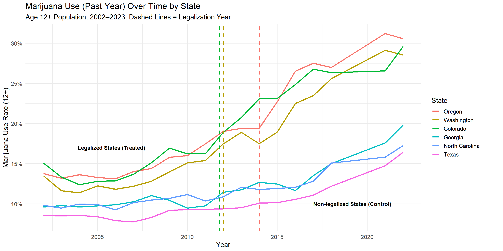
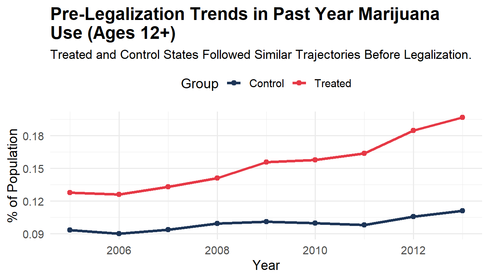
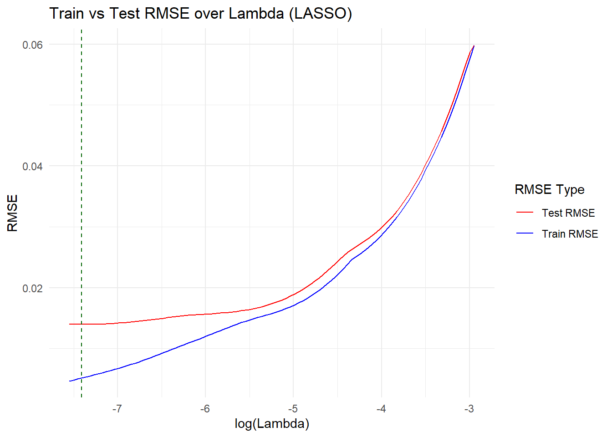

Impact of Marijuana on Usage Rates
Intro
This project investigates the impact of marijuana legalization on usage rates across U.S. states, with a focus on estimating and predicting how legalization influences the percentage of people who report using marijuana in the past year, including everyone who is 12+. We begin by comparing usage trends in states that legalized marijuana with those that did not, followed by a difference-in-differences analysis to isolate the causal effect of legalization. Our analysis estimates that legalization is associated with a 5% increase in usage throughout the study. We also used visualization to show counterfactual trends had legalization not occurred, and examine whether youth usage (ages 12–17) increased following legalization, finding little evidence of change. Finally, we apply a lasso regression to evaluate predictive performance using various explanatory variables and interactions.
1. Data
Our analysis draws from a combination of different different sources. We sourced the data for marijuana usage rates from the Substance Abuse and Mental Health Services Administration. To assess the effects of marijuana legalization, we constructed indicators for treatment timing and legalization exposure. States that legalized marijuana in the 2010s—Colorado, Washington, and Oregon—serve as treated units, while a group of comparison states that did not legalize are used for controls.
To account for state-to-state differences, we also sourced poverty rate, state population, and median income for each year from Census Bureau summarizations. We merged these variables with state usage data to control for underlying socioeconomic differences. To control for education differences we added a variable showing the percentage of people with a bachelor’s degree or above. However, missing data before 2007 impacted our model too heavily to include it in our final dataset. We excluded observations where survey or economic data were missing for specific state-year pairs to avoid introducing bias.
The data contains 114 state-year observations across 6 states, covering the period of 2002-2022. The average percentage of people 12+ who have tried marijuana in the past year was ~ 15%. Ages 18-25 were significantly higher at ~33% of people. Average median income was 54,000$ and poverty rates ranged from 9.6%-19.20% depending on the state and year.
2. Visualization
This section explores the relationship between recreational marijuana legalization and past-year marijuana use among individuals aged 12 and older. We examine not only aggregate state-level trends, but also how treated states compare to controls over time, and whether legalization disrupted prior trends in meaningful ways.
The first figure shows state-level trajectories in marijuana use from 2002–2023. We observe that states that eventually legalized marijuana—Colorado, Oregon, and Washington—experienced sharper increases in use compared to control states like Georgia, North Carolina, and Texas. Notably, usage rates began diverging more clearly around the early 2010s, aligning with the timing of legalization in treated states.

Moving forward we focused on the pre-legalization period (2002–2013) and compared average marijuana use across treated and control groups. The parallel trajectories before policy adoption suggest that these groups followed similar trends before legalization—supporting the parallel trends assumption necessary for causal inference via difference-in-differences.
Legalization is associated with a 5.89% point increase in
past-year marijuana use among individuals aged 12 and older
(SE = 0.51, p = 4.55e-19).
Now we compare observed marijuana use in the treated states to counterfactual predictions based on control states. In all three states, observed usage trends slightly exceed predicted values in various years following legalization, though the differences are modest and not uniform over time. In Colorado and Oregon, the gap is visible but narrow, but specifically in Oregon eventually, the prediction exceeds reality. However, in Washington, the lines largely converge again by the end of the series after over-estimating immediately following legalization. These patterns suggest that legalization may have contributed to a mild uptick in adult marijuana use, but the effect size appears small and attenuates over time. Overall, Legalization is associated with a 5.89% point increase in past-year marijuana use among individuals aged 12 and older.

Finally, we isolated the impact of legalization on teen marijuana use. In contrast to adults, no post-legalization increase is observed among teens in the treated states. Usage rates remained flat or even declined slightly, diverging from the pattern observed in the overall population. This suggests that legalization did not lead to greater marijuana use among adolescents, countering a common concern.
Among teens (ages 12–17), legalization was associated with a 0.36 percentage point increase in past-year marijuana use, though this effect was not statistically significant (p = 0.265, SE = 0.0036).
Together, these visuals reveal a clear story: legalization led to increased marijuana use among adults but not among teens. The analysis underscores the value of disaggregating effects by age group and highlights how policy impacts can differ sharply within a population.
3. Predictive Model

In this analysis, we employed a LASSO regression model to predict the outcome variable 12+ using various predictors, including whether or not the state experienced legalization (Treated), post-legalization status (Post), socioeconomic factors (such as Poverty_Rate and Median_Income), and fixed effects for State and Year. We used 10-fold cross-validation to tune the lambda parameter, and evaluated model performance using Train, Test, and Evaluation RMSE. The optimal lambda minimized test RMSE at 0.0186, and the evaluation RMSE was 0.0118, indicating the model performs reasonably well in out-of-sample prediction. This RMSE suggests a reasonable level of predictive accuracy, with the model capturing the key relationships between the predictors and the outcome, though further tuning or exploration of additional predictors could improve performance.
Train RMSE: 0.0051
Test RMSE: 0.0186Evaluation RMSE: 0.0118